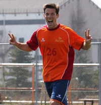

|
|
Players dancing for Joy at the chance to play football and raise money for charity.
|
YCAC Have The X Factor.
YC&AC, Monday 22nd March.
Thankfully the strong winds and rain of Sunday morning subsided, so that when the teams entering this years 6th edition of the Charity 7's, arrived Monday morning at YC&AC it was to sunny skies and hardly a breeze.
It was all action in the football though with a total of 142 goals being scored in the 38 matches that were played. YCAC 'X' beat their brothers in arms, YCAC in a thrilling final to walk away with the Champions cup.
It was the 2 beneficiary Charities, Refugees International Japan and Jeannie and Billy’s Children’s Foundation in Cambodia, who were the real winners though. They will both receive half of the ¥520,000 raised by the event. for the full story and photo galleries click here
RH
George Roast Guarana in the Morning Sun
|  |
|
Dan Bard celebrates scoring a hat-trick in KGFC'S demolition of Guarana.
|
Fukuda Denshi, Sunday 14th March.
The squad was looking a little different than last week, with Tomoki working, Ginger Iain back in Brum and Steinson cavorting in the land of nervous sheep and curious farm-hands. On the plus side back in were “Dangerous” Dan Bard, “Feisty” Fernando Bermudez and “Aggressively Mobile” Adz McCann so the team wasn’t in any danger of being under strength. The sun was shining, everyone was remarkably genki considering the early start and we had plenty of fans in tow! It was only when we got to the pitch that we realized the “fans” we had accumulated were here to watch some mob called JEF united play later that day. Well, their loss. more
JB
Sat-Nabs Points.
|
|
'Heads-up' Mark Van Den Bosche challenges Craig Palmer for a header.
|
YC&AC, Saturday 13th March.
A sunny yet blustery YCAC played host to the Old Boys & BEFC, a match which when last played served up 7 goals and saw the Embassy squeeze past...ahem.. 7 men. No such problems this time round as the game kicked off with a full complement of players and BEFC first to have the wind behind them.
Rather than proving to be beneficial, the wind seemed to create more problems than good. Passes were over-weighted and beyond the reach of the strikers who were kept relatively quiet for the first 20 minutes. more
RH
|